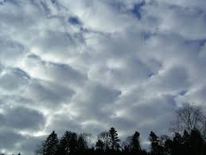
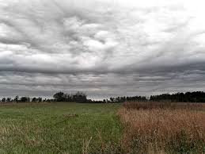
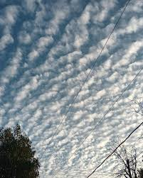

MINI MANUAL BASICO DE METEOROLOGIA
ESIA TICOMAN METEOROLOGIA

INTEGRANTES
Dominguez Diego Rodrigo Daniel
Soriano Osio Cecilia Michel
Marquez Garcia Pamela Antonia

¿Que es un EMA?
Sistema autónomo y automático formado por un conjunto de sensores de medición, dispositivos eléctricos, electrónicos y mecánicos, montados sobre una estructura de soporte, en donde son distribuidos, orientados y conectados al Sistema de adquisición, procesamiento y almacenamiento de datos (SAPAD) de la estación, con el objetivo de realizar la medición y registro de las variables meteorológicas que imperan en el lugar, y transmitir los datos obtenidos a la oficina central, en donde serán utilizados y almacenados a una base de datos.
Unidades de medida
Velocidad del viento
Dirección del viento
Presión atmosférica
Temperatura
Humedad relativa
Radiación
Precipitación
Estaciones Meteorologicas Automaticas (EMA's)
| Estacion | Institucion | Locacion | Fotografia |
|---|---|---|---|
| CALVILLO | SMN-CONAGUA | AGUASCALIENTES | |
| PRESA 50 ANIV. | CONAGUA | AGUASCALIENTES | |
| SIERRA FRIA | SMN-CONAGUA | AGUASCALIENTES | |
| BAHÍA DE LOS ANGELES | SMN-CONAGUA | BAJA CALIFORNIA | |
| CATAVIÑA | SMN-CONAGUA | BAJA CALIFORNIA | |
| CONSTITUCION DE 1857 | SMN-CONAGUA | BAJA CALIFORNIA | |
| LA RUMOROSA | SEDENA | BAJA CALIFORNIA | |
| MEXICALI | SMN-CONAGUA | BAJA CALIFORNIA | |
| PLAYAS ROSARITO | SMN-CONAGUA | BAJA CALIFORNIA | |
| PRESA ABELARDO L. RODRÍGUEZ (TIJUANA) | CONAGUA | BAJA CALIFORNIA | |
| PRESA EMILIO LÓPEZ ZAMORA (ENSENADA) | CONAGUA | BAJA CALIFORNIA | |
| SAN QUINTÍN | SMN-CONAGUA | BAJA CALIFORNIA | |
| TECATE | SMN-CONAGUA | BAJA CALIFORNIA | |
| BAHIA DE LORETO | SMN-CONAGUA | BAJA CALIFORNIA | |
| CABO PULMO | SMN-CONAGUA | BAJA CALIFORNIA | |
| CABO SAN LUCAS | SMN-CONAGUA | BAJA CALIFORNIA | |
| GUSTAVO DÍAZ ORDAZ | SMN-CONAGUA | BAJA CALIFORNIA | |
| SAN JUANICO | SMN-CONAGUA | BAJA CALIFORNIA | |
| SIERRA LA LAGUNA | SMN-CONAGUA | BAJA CALIFORNIA | |
| TODOS SANTOS | SMN-CONAGUA | BAJA CALIFORNIA | |
| CALAKMUL I | CONAGUA | CAMPECHE | |
| CALAKMUL II | CONAGUA | CAMPECHE | |
| DZILBACHEN | SMN-CONAGUA | CAMPECHE | |
| ESCARCEGA | SMN-CONAGUA | CAMPECHE | |
| ISLA DEL CARMEN | CONAGUA | CAMPECHE | |
| LOS PETENES | SMN-CONAGUA | CAMPECHE | |
| MONCLOVA | SMN-CONAGUA | CAMPECHE | |
| YOHALTUM | SMN-CONAGUA | CAMPECHE | |
| CAÑON DEL SUMIDERO | CONAGUA | CHIAPAS | |
| EL TRIUNFO | SMN-CONAGUA | CHIAPAS | |
| ESCUINTLA | SMN-CONAGUA | CHIAPAS | |
| LA ENCRUCIJADA | SMN-CONAGUA | CHIAPAS | |
| LAGUNAS DE MONTEBELLO | SMN-CONAGUA | CHIAPAS | |
| MONTES AZULES | SMN-CONAGUA | CHIAPAS | |
| PALENQUE | SMN-CONAGUA | CHIAPAS | |
| VOLCAN TACANA | CONAGUA | CHIAPAS | |
| BASASEACHI | SMN-CONAGUA | CHIHUAHUA | |
| CD. CUAUHTEMOC | SMN-CONAGUA | CHIHUAHUA | |
| CHINATÚ | SMN-CONAGUA | CHIHUAHUA | |
| CHINIPAS | SMN-CONAGUA | CHIHUAHUA | |
| CIUDAD DELICIAS | SMN-CONAGUA | CHIHUAHUA | |
| CUMBRES DE MAJALCA | CONAGUA | CHIHUAHUA | |
| EL VERGEL | SMN-CONAGUA | CHIHUAHUA | |
| GUACHOCHI | SMN-CONAGUA | CHIHUAHUA | |
| JANOS | SEDENA | CHIHUAHUA | |
| JIMENEZ | SMN-CONAGUA | CHIHUAHUA | |
| MAGUARICHI | SMN-CONAGUA | CHIHUAHUA | |
| OJINAGA | SMN-CONAGUA | CHIHUAHUA | |
| URIQUE | SMN-CONAGUA | CHIHUAHUA | |
| VILLA AHUMADA | SMN-CONAGUA | CHIHUAHUA | |
| CUATRO CIÉNEGAS | SMN-CONAGUA | COAHUILA | |
| MORELOS-MUZQUIZ | SMN-CONAGUA | COAHUILA | |
| NUEVA ROSITA | SMN-CONAGUA | COAHUILA | |
| OCAMPO | SMN-CONAGUA | COAHUILA | |
| SANTA CECILIA | SMN-CONAGUA | COAHUILA | |
| VENUSTIANO CARRANZA | SMN-CONAGUA | COAHUILA | |
| SIERRA DE MANANTLAN I | CONAGUA | COLIMA | |
| ECOGUARDAS | SEMARNAT | CIUDAD DE MÉXICO | |
| ENCB II | IPN | CIUDAD DE MÉXICO | |
| ESCUELA NACIONAL DE CIENCIAS BIOLÓGICAS | IPN | CIUDAD DE MÉXICO | |
| TEZONTLE | SMN-CONAGUA | CIUDAD DE MÉXICO | |
| AGUSTIN MELGAR | SEMARNAT | DURANGO | |
| LA FLOR | CONAGUA | DURANGO | |
| LA MICHILIA, DGO | SEMARNAT | DURANGO | |
| LAS VEGAS | CONAGUA | DURANGO | |
| MAPIMI, DGO | CONAGUA | DURANGO | |
| SAN JUAN DE GUADALUPE | CONAGUA | DURANGO | |
| VILLA OCAMPO | CONAGUA | DURANGO | |
| PRESA ALLENDE | CONAGUA | GUANAJUATO | |
| SIERRA GORDA II | CONAGUA | GUANAJUATO | |
| ATOYAC | CONAGUA | GUERRERO | |
| CD. ALTAMIRANO | CONAGUA | GUERRERO | |
| EL VELADERO | CONAGUA | GUERRERO | |
| IGUALA | SMN-CONAGUA | GUERRERO | |
| LAS VIGAS | SMN-CONAGUA | GUERRERO | |
| PETACALCO | CONAGUA | GUERRERO | |
| TLAPA DE COMONFORT | CONAGUA | GUERRERO | |
| ZIHUATANEJO | CONAGUA | GUERRERO | |
| EL CHICO | CONAGUA | HIDALGO | |
| HUICHAPAN | SMN-CONAGUA | HIDALGO | |
| ITESA-APAN | SMN-CONAGUA | HIDALGO | |
| LOS MARMOLES | CONAGUA | HIDALGO | |
| ZACUALTIPAN | CONAGUA | HIDALGO | |
| ZIMAPAN | CONAGUA | HIDALGO | |
| HUEJUTLA | CONAGUA | HIDALGO | |
| CHAMELA-CUIXMALA | SEMARNAT | JALISCO | |
| CHAPALA | SMN-CONAGUA | JALISCO | |
| JOCOTEPEC | CONAGUA | JALISCO | |
| LA PRIMAVERA | CONAGUA | JALISCO | |
| NEVADO DE COLIMA | CONAGUA | JALISCO | |
| RÍO TOMATLAN | CONAGUA | JALISCO | |
| SIERRA DE MANANTLAN II | CONAGUA | JALISCO | |
| TIZAPAN | CONAGUA | JALISCO | |
| TLAJOMULCO | CONAGUA | JALISCO | |
| ALTZOMONI | CONAGUA | MEXICO | |
| ATLACOMULCO | CONAGUA | MEXICO | |
| CERRO CATEDRAL | CONAGUA | MEXICO | |
| NEVADO DE TOLUCA | CONAGUA | MEXICO | |
| PARQUE IXTA-POPO | CONAGUA | MEXICO | |
| PRESA MADÍN | CONAGUA | MEXICO | |
| VALLE DE BRAVO | CONAGUA | MEXICO | |
| ANGAMACUTIRO | CONAGUA | MICHOACÁN | |
| APATZINGAN | CONAGUA | MICHOACÁN | |
| MARIPOSA MONARCA I | CONAGUA | MICHOACÁN | |
| MARIPOSA MONARCA II | CONAGUA | MICHOACÁN | |
| PRESA ZICUIRAN | CONAGUA | MICHOACÁN | |
| URUAPAN | CONAGUA | MICHOACÁN | |
| INSTITUTO MEXICANO DE TECNOLOGÍA DEL AGUA | IMTA | MORELOS | |
| LAGUNAS DE ZEMPOALA | CONAGUA | MORELOS | |
| SIERRA DE HUAUTLA | CONAGUA | MORELOS | |
| TEPOZTLAN | SEMARNAT | MORELOS | |
| TRES MARIAS | CONAGUA | MORELOS | |
| ACAPONETA | CONAGUA | NAYARIT | |
| IXTLAN DEL RIO | CONAGUA | NAYARIT | |
| MARISMAS NACIONALES | SEMARNAT | NAYARIT | |
| CUMBRES DE MTY I | CONAGUA | NUEVO LEON | |
| CUMBRES DE MTY - EL DIENTE | CONAGUA | NUEVO LEÓN | |
| PRESA EL CUCHILLO | CONAGUA | NUEVO LEÓN | |
| BENITO JUAREZ | CONAGUA | OAXACA | |
| LAGUNA CHACAHUA | SEMARNAT | OAXACA | |
| MATIAS ROMERO | CONAGUA | OAXACA | |
| MIAHUATLAN | CONAGUA | OAXACA | |
| NOCHISTLAN | CONAGUA | OAXACA | |
| PINOTEPA NACIONAL | CONAGUA | OAXACA | |
| PUERTO ESCONDIDO | CONAGUA | OAXACA | |
| HUAUCHINANGO | CONAGUA | PUEBLA | |
| LA MALINCHE II | CONAGUA | PUEBLA | |
| TEHUACAN | CONAGUA | PUEBLA | |
| TEZUITLÁN | CONAGUA | PUEBLA | |
| UNIVERSIDAD TECNOLÓGICA DE TECAMACHALCO | UTT | PUEBLA | |
| IZUCAR DE MATAMOROS | CONAGUA | PUEBLA | |
| PRESA JALPAN | CONAGUA | QUERETARO | |
| SIERRA GORDA I | CONAGUA | QUERETARO | |
| HUIMILPAN | CONAGUA | QUERETARO | |
| ARRECIFES XCALAK | SEMARNAT | QUINTANA ROO | |
| CANCÚN | SMN-CONAGUA | QUINTANA ROO | |
| COZUMEL | SMN-CONAGUA | QUINTANA ROO | |
| JOSÉ MARIA MORELOS | CONAGUA | QUINTANA ROO | |
| KANTUNILKIN | CONAGUA | QUINTANA ROO | |
| LA UNION | CONAGUA | QUINTANA ROO | |
| NICOLÁS BRAVO | CONAGUA | QUINTANA ROO | |
| SIAN KA'AN II | CONAGUA | QUINTANA ROO | |
| CIUDAD FERNÁNDEZ | CONAGUA | SAN LUIS POTOSI | |
| CIUDAD VALLES | CONAGUA | SAN LUIS POTOSI | |
| GOGORRON | CONAGUA | SAN LUIS POTOSI | |
| MATEHUALA | CONAGUA | SAN LUIS POTOSI | |
| EL FUERTE | CONAGUA | SINALOA | |
| OBISPO | CONAGUA | SINALOA | |
| SAN JUAN | CONAGUA | SINALOA | |
| ALAMOS | CONAGUA | SONORA | |
| CABORCA | CONAGUA | SONORA | |
| EL PINACATE | SEMARNAT | SONORA | |
| HERMOSILLO - BAHIA DE KINO | CONAGUA | SONORA | |
| NOGALES | CONAGUA | SONORA | |
| SAN LUIS RÍO COLORADO | CONAGUA | SONORA | |
| SONOYTA | CONAGUA | SONORA | |
| YECORA | CONAGUA | SONORA | |
| CAÑON USUMACINTA | CONAGUA | TABASCO | |
| PANTANOS DE CENTLA | SEMARNAT | TABASCO | |
| PARAISO | SEMARNAT | TABASCO | |
| BARRA DEL TORDO | SEMARNAT | TAMAULIPAS | |
| CIUDAD MANTE | CONAGUA | TAMAULIPAS | |
| JAUMAVE | CONAGUA | TAMAULIPAS | |
| MATAMOROS | CONAGUA | TAMAULIPAS | |
| SAN FERNANDO | CONAGUA | TAMAULIPAS | |
| VILLAGRAN | CONAGUA | TAMAULIPAS | |
| HUAMANTLA | CONAGUA | TLAXCALA | |
| LA MALINCHE I | CONAGUA | TLAXCALA | |
| ACAYUCAN | CONAGUA | VERACRUZ | |
| ALVARADO | CONAGUA | VERACRUZ | |
| CD. ALEMAN | CONAGUA | VERACRUZ | |
| CITLALTEPEC | CONAGUA | VERACRUZ | |
| CÓRDOBA | CONAGUA | VERACRUZ | |
| COSCOMATEPEC | CONAGUA | VERACRUZ | |
| LA CANGREJERA | SEMARNAT | VERACRUZ | |
| LOMA GRANDE | CONAGUA | VERACRUZ | |
| LOS TUXTLAS I | SEMARNAT | VERACRUZ | |
| LOS TUXTLAS II | SEMARNAT | VERACRUZ | |
| PEROTE | CONAGUA | VERACRUZ | |
| PRESA TUXPANGO | CONAGUA | VERACRUZ | |
| CELESTÚN | SEMARNAT | YUCATÁN | |
| DZILAM | SEMARNAT | YUCATÁN | |
| OXKUTZCAB | SEMARNAT | YUCATÁN | |
| RÍO LAGARTOS | SEMARNAT | YUCATÁN | |
| TANTAQUIN | SEMARNAT | YUCATÁN | |
| TIZIMIN | SEMARNAT | YUCATÁN | |
| LA FLORIDA | SEMARNAT | ZACATECAS | |
| ZACATECAS | CONAGUA | ZACATECAS |

RADIOSONDAS
¿QUE ES UNA RADIO SONDA?
Una radio sonda es un dispositivo utilizado en meteorología para medir las condiciones atmosféricas a diferentes altitudes. Es parte esencial del Servicio Meteorológico Nacional (SMN) y juega un papel crucial en la recolección de datos que ayudan a la predicción del clima y el pronóstico del tiempo.
UNIDADES DE MEDIDA
TEMPERATURA
HUMEDAD RELATIVA
PRESION
| SONDA | INSTITUCION | UBICACION | 00 UTC | 12 UTC |
|---|---|---|---|---|
| LA PAZ | SMN-CONAGUA | BAJA CALIFORNIA | LAP/00 | LAP/12 |
| EMPALME | SMN-CONAGUA | SONORA | EPM/00 | EPM/12 |
| CHIHUAHUA | SMN-CONAGUA | COAHUILA | CUU/00 | CUU/12 |
| MAZATLAN | SMN-CONAGUA | SINALOA | MZT/00 | MZT/12 |
| MONTEREY | SMN-CONAGUA | NUEVO LEON | MTY/00 | MTY/12 |
| ZACATECAS | SMN-CONAGUA | ZACATECAS | ZCL/00 | ZCL/12 |
| GUADALAJARA | SMN-CONAGUA | JALISCO | GDL/00 | GDL/12 |
| MANZANILLO | SMN-CONAGUA | COLIMA | ZLO/00 | ZLO/12 |
| TACUBAYA | SMN-CONAGUA | CDMX | MXN/00 | MXN/00 |
| ACAPULCO | SMN-CONAGUA | GUERRERO | ACA/00 | ACA/12 |
| BOCA DEL RIO | SMN-CONAGUA | VERACRUZ | BCA/00 | BCA/12 |
| VILLAHERMOSA | SMN-CONAGUA | TABASCO | VSA/00 | VSA/12 |
| TAPACHULA | SMN-CONAGUA | CHIAPAS | TPC/00 | TPC/12 |
| MERIDA | SMN-CONAGUA | YUCATAN | MID/00 | MID/12 |
| CANCÚN | SMN-CONAGUA | QUINTANA ROO | CUN/00 | CUN/12 |
NUBES BAJAS
| NOMBRE | GRUPO | DESCRIPCCION | IMAGEN |
|---|---|---|---|
| CUMULUS HUMILIS | CL1 | Son nubes de tipo cúmulo que se caracterizan por ser pequeñas, con poca altura y con bases planas. Aparecen en cielos parcialmente despejados y generalmente están asociadas con buen tiempo. |  |
| CUMULUS CONGESTUS | CL2 | Son nubes cúmulo de mayor desarrollo vertical que pueden alcanzar altitudes significativas, pero no son tan grandes como los cumulonimbos. Son las nubes comunes en días cálidos, a menudo asociadas con tormentas locales. |  |
| COMULUNIMBUS CALVUS | CL3 | Son nubes cúmulo que están en fase de desarrollo de cumulonimbo, pero todavía no han alcanzado la fase de tormenta intensa. Tienen un desarrollo vertical considerable, pero su cúpula aún no es claramente visible. |  |
| STRATOCOMULUS CUMULOGENITUS | CL4 | Nubes estratocúmulos que se originan por la convección de aire en una capa baja de la atmósfera, a menudo como resultado de la transformación de cúmulos en estratocúmulos. Estas nubes tienen una base baja, pero su apariencia es más densa y extensa. |  |
| STRATOCOMULUS NO FORMADOS | CL5 | Son nubes estratocúmulos que aún no tienen una forma definida o consistente. Generalmente son fragmentos de nubes que cubren el cielo en capas dispersas, y pueden asociarse con un clima nublado pero generalmente tranquilo. |  |
| STRATOCOMULUS | CL6 | Nubes de tipo estratocúmulo son nubes bajas que generalmente cubren grandes áreas del cielo. Pueden ser de apariencia densa o algo esponjosa, y normalmente se asocian con tiempo nublado, sin precipitaciones fuertes. |  |
| STRATO FRACTUS | CL7 | Son nubes estrato-fractus, fragmentos de nubes estratiformes que se observan como capas o bancos de nubes que cubren parcialmente el cielo, generalmente con visibilidad reducida, a menudo asociadas con nieblas o precipitaciones ligeras. |  |
| CUMULUS Y STRATOCOMULUS | CL8 | Combinación de cúmulos y estratocúmulos en el mismo cielo. A menudo, estos dos tipos de nubes se encuentran mezclados, con algunos cúmulos desarrollándose y otros estratocúmulos cubriendo la capa baja del cielo. | |
| CUMULUNIMBUS CAPILATUS | CL9 | Son nubes cumulonimbus en su fase madura que tienen un desarrollo vertical muy alto, con una gran torre de nubes y una cúpula distintiva. Están asociadas con tormentas severas y fenómenos meteorológicos extremos como lluvias intensas, granizo, rayos y vientos fuertes. | |
NUBES MEDIAS
| NOMBRE | GRUPO | DESCRIPCCION | IMAGEN |
|---|---|---|---|
| ALTOSTRATUS TRANSLUCIDUS | CM1 | Son nubes altostratus delgadas que permiten pasar algo de luz a través de ellas, pero todavía cubren el cielo. Estas nubes no suelen producir precipitaciones significativas, pero pueden estar asociadas con lloviznas ligeras o nieve. Su presencia es común antes de un sistema frontal. | |
| NIMBOSTRATUS | CM2 | Son nubes nimbostratus, formaciones de nubes de tipo estratiforme que cubren grandes áreas del cielo. Se caracterizan por ser densas y muy oscuras, produciendo lluvias continuas o nevadas, de intensidad moderada a fuerte. Son las nubes típicas de tormentas de lluvia prolongada. |  |
| ALTOCUMULUS | CM3 | Son nubes altocúmulos formadas a una altitud media (entre 2 y 7 km) en la atmósfera. Se ven como pequeños cúmulos o globos esponjosos en el cielo y pueden ser signos de inestabilidad atmosférica. Generalmente, no producen precipitaciones, pero pueden ser indicativos de cambios en el clima. | |
| ALTOCUMULUS LENTICULARES | CM4 | Son nubes altocúmulos formadas a una altitud media (entre 2 y 7 km) en la atmósfera. Se ven como pequeños cúmulos o globos esponjosos en el cielo y pueden ser signos de inestabilidad atmosférica. Generalmente, no producen precipitaciones, pero pueden ser indicativos de cambios en el clima. |  |
| ALTOCUMULUS EN BANDAS | CM5 | Son nubes altocúmulos formadas a una altitud media (entre 2 y 7 km) en la atmósfera. Se ven como pequeños cúmulos o globos esponjosos en el cielo y pueden ser signos de inestabilidad atmosférica. Generalmente, no producen precipitaciones, pero pueden ser indicativos de cambios en el clima. |  |
| ALTOCUMULUS CUMULOGENITUS | CM6 | Son nubes altocúmulos que se forman por la evolución de otras nubes de tipo cúmulo. Aparecen cuando las nubes cúmulo (bajas) se desarrollan verticalmente, alcanzando altitudes medias, y se convierten en altocúmulos. Estas nubes pueden estar asociadas con fenómenos de inestabilidad en la atmósfera. |  |
| ALTOCUMULUS Y ALTOSTRATUS | CM7 | Es la combinación de altocúmulos y altostratus en el cielo. Esta mezcla puede ser un indicativo de un cambio en las condiciones meteorológicas, como el paso de un frente cálido o una transición hacia una tormenta. Las nubes altostratus generalmente cubren todo el cielo, mientras que los altocúmulos se agrupan en formaciones más dispersas. |  |
| ALTOCUMULUS CASTELLANUS | CM8 | Son nubes altocúmulos que desarrollan torres o cúmulos verticales en su estructura, lo que les da una forma de "castillo" o "torres" (de ahí el nombre castellanus). Estas nubes son indicativas de inestabilidad en la atmósfera y pueden producir lluvias de corta duración, tormentas o incluso tormentas aisladas. |  |
| ALTOCUMULUS CAOTICO | CM9 | Son nubes altocúmulos que tienen una forma irregular y desorganizada, lo que les da una apariencia caótica. Estas nubes pueden indicar que el aire es turbulento o que una zona de inestabilidad atmosférica está presente. Aunque no suelen producir precipitaciones intensas, pueden ser indicativas de cambios en el clima. |  |
NUBES ALTAS
| NOMBRE | GRUPO | DESCRIPCCION | IMAGEN |
|---|---|---|---|
| CIRRUS FIBRATUS | CH1 | Son nubes de tipo cirro con una estructura alargada y fibrosa, que a menudo se presentan como filamentos dispersos o haces de nubes. Estas nubes se encuentran en las capas más altas de la atmósfera, a altitudes superiores a los 6 km. Generalmente no producen precipitación, pero su presencia indica que una tormenta o un cambio en las condiciones meteorológicas podrían estar por llegar. |  |
| CIRRUS SPISSATUS | CH2 | Son nubes de cirros más densas que los cirros fibratus, y pueden aparecer como una capa más gruesa. Son nubes de alta altitud (más de 6 km) y, aunque no producen lluvias directamente, pueden ser señales de que un sistema frontal está acercándose. En ocasiones, pueden estar asociadas con tormentas a gran altitud. |  |
| CIRRUS CUMULONIMBUGENITUS | CH3 | Son cirros que se originan a partir de nubes cumulonimbus (tormentas). Se desarrollan cuando una tormenta de tipo cumulonimbus alcanza grandes altitudes y sus restos forman los cirros. Estos cirros pueden ser señales de tormentas de gran altura, a menudo asociadas con tormentas severas o un clima inestable. |  |
| CIRRUS UNCINUS | CH4 | Son cirros con una forma característica de "garfio" o "curva", con extremos de los filamentos doblados. Se encuentran a altitudes muy altas y, aunque no producen precipitaciones, suelen indicar que un sistema frontal está en camino. Estas nubes se pueden asociar con el paso de frentes fríos. |  |
| CIRRUS Y CIRRUSTRATUS<45 | CH5 | Son cirros y cirrostratus que se presentan con una inclinación de menos de 45 grados. Cirrostratus son nubes finas y delgadas que cubren el cielo, y su presencia puede provocar halos alrededor del sol o la luna. Este tipo de formación podría estar asociado con condiciones de tiempo más inestables o el acercamiento de un frente. | |
| CIRRUS Y CIRRUSTRATUS>45 | CH6 | Similar al tipo anterior, pero en este caso las nubes de cirrostratus y cirros tienen una inclinación mayor a 45 grados. Pueden indicar una transición hacia un sistema meteorológico más activo y un cambio en las condiciones del tiempo, como el paso de un frente cálido o frío. | |
| CIRRUSTRATUS BKN | CH7 | irrostratus que cubren parcialmente el cielo, con áreas broken (bajo nublado), lo que significa que la cobertura de nubes es incompleta, pero significativa. Este tipo de formación generalmente ocurre cuando hay humedad en las capas altas de la atmósfera y puede estar asociado con el paso de un frente frío o el inicio de una tormenta. | |
| CIRRUSTRATUS NO BKN | CH8 | Cirrostratus que cubren todo el cielo sin estar rotos o fragmentados, es decir, forman una capa continua. Estas nubes son delgadas y no producen precipitación, pero pueden indicar la aproximación de un sistema de bajas presiones o un frente cálido. | |
| CIRRUCUMULUS | CH9 | Son cirros formados en pequeños grupitos o montones de nubes blancas que tienen una forma de "copos de algodón". Están formados a altitudes superiores a 6 km y son un indicativo de la presencia de humedad a gran altitud. Aunque no suelen generar precipitaciones, pueden indicar un clima inestable en las capas superiores de la atmósfera. |  |